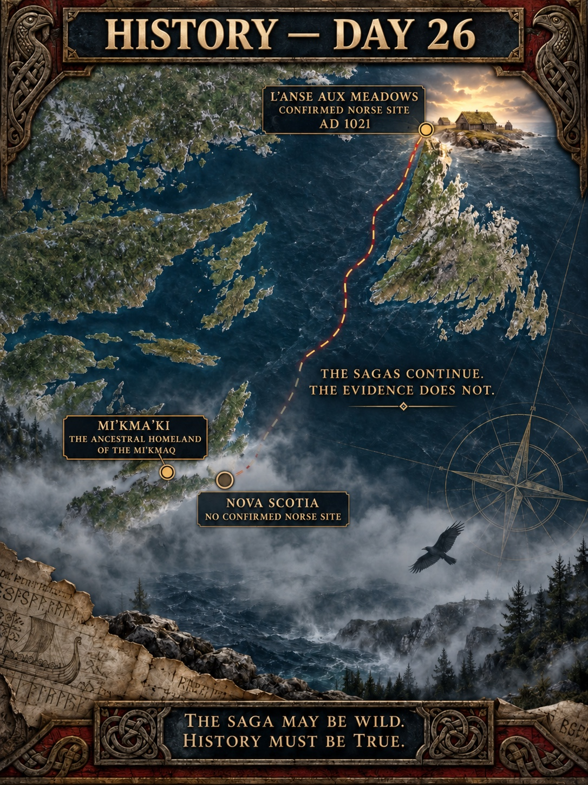
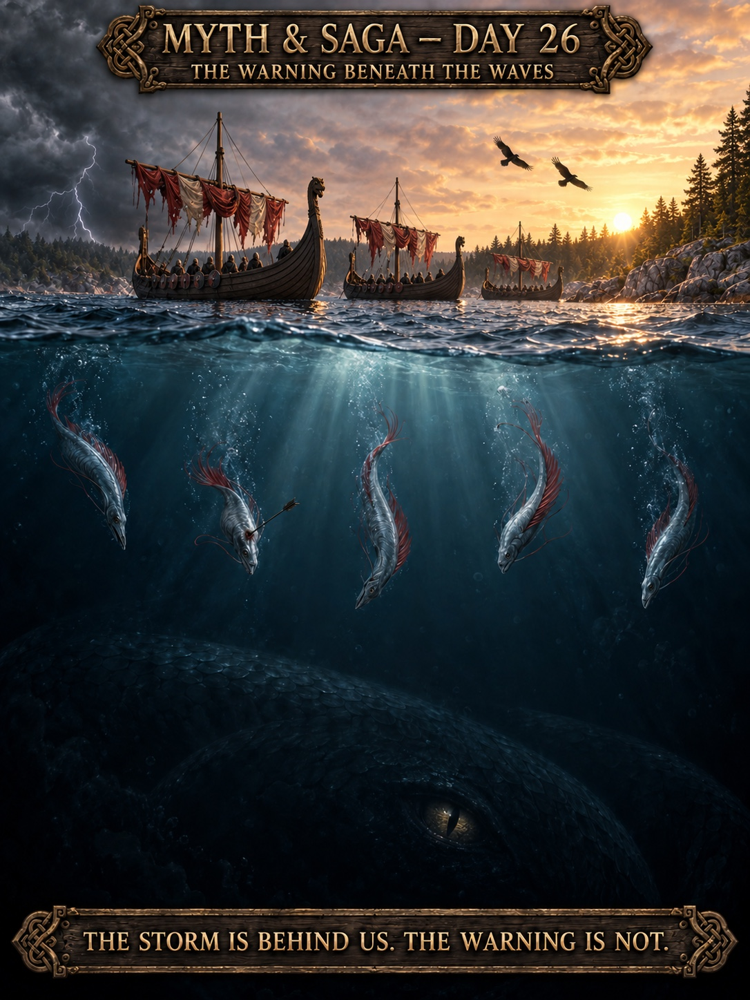
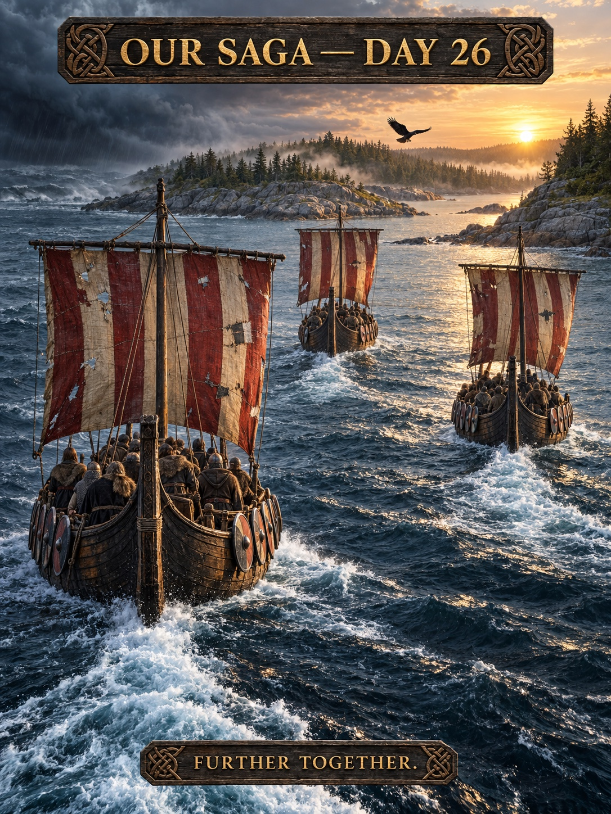
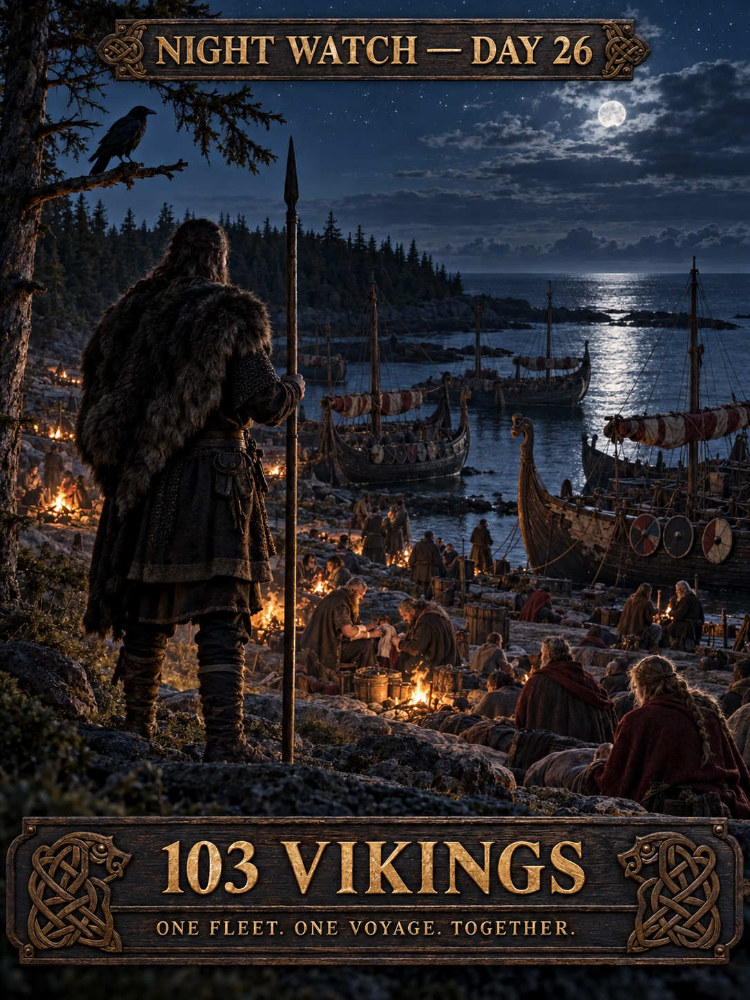

THE VOYAGE ARCHIVE · THE CAPTAIN'S LOG
DAY 26
Nova Scotia reached. Chapter III complete.

CAPTAIN'S LOG · DAY 26
CHAPTER III — COMPLETE
103 VIKINGS · 50,647,198 STEPS · ≈32,920.7 KM
ARRIVED — NOVA SCOTIA.
ONE FLEET. ONE SAGA. ONE GOAL.
— HÁKON
HISTORY — DAY 26

MYTH & SAGA — DAY 26

OUR SAGA — DAY 26

CREW HONORS — DAY 26
THREE MORE NAMES ENTER THE SHIP'S ROLL

NIGHT WATCH — DAY 26
